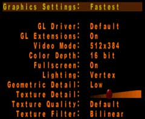
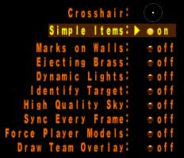

Improving Game Performance
If you have a computer system that matches, or is just above, the minimum specifications required to run Quake III, you will probably want to change some of the Game Options and Graphics Settings to improve your frame rate. Outlined below are examples of the lowest (fastest performance) settings available through the Quake III Arena menu system. You should remember that by turning off/down these settings, you will be lowering the visual quality of the game. These options can be accessed through the Setup / System and Setup / Game Options menus respectively.
Graphics Settings

Game Options

Performance Related Console Commands
Advanced users can also adjust the above variables, as well as a few additional
settings, through the console (accessed by hitting the ~ key). Once you
have activated the console, you can type the following commands - remember to
hit the Enter key after each line.
\r_mode2
\r_colorbits 16
\r_texturemode GL_LINEAR_MIPMAP_NEAREST
\r_vertexlighting 1
\r_subdivision 999
\r_lodbias 2
\cg_gibs 0
\cg_draw3dicons 0
\cg_brassTime 0
\cg_marks 0
\cg_shadows 0
\cg_simpleitems 1
\cg_drawAttacker 0
Once you have modified all of the commands that you wish to change, you will need to reset your video. You can also do this in the console by typing:
\vid_restart